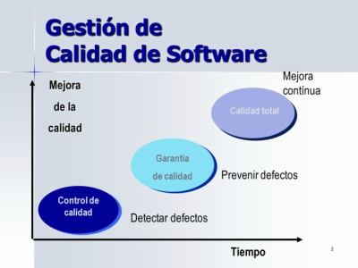

Introducción

De acuerdo a la IEEE610.12-90, la gestión de la ingenieria del software se puede definir como la aplicación para las actividades de gestion como lo son la planificacion, la coordinacion, las mediciones, el monitoreo, el control y los informes que asegure un mantenimiento del software sistematico, disciplinado y sobre todo, cuantificado
el KA (Knowledge Area) de la gestión de la I.S se encarga de la gestion y la medicion de la I.S. A pesar de que medir es una accion importante en todas las KAs, en la gestion de Ingenieria del Software es donde se aborda este termino en toda su cabalidad.
A continuacion se describira cada una de las actividades de gestion de Ingenieria del Software:
- Planificacion: Todo proyecto conlleva de forma inhirente la realizacion de una serie de actividades para que el proyecto en cuestion pueda ser completado a cabalidad. La forma en la que se distribuye el tiempo para cada una de las actividades y los recursos que se deben usar son, como punto importante, las funciones que se deben abarcar en la planificacion de proyectos. El objetivo de la planificacion es poder obtener de forma detallada la distribucion de los tiempos y los recursos que minimice el costo del proyecto cumpliento con todas las limitantes que se han planteado
- Coordinacion: Todo proyecto debe llevar un orden en el cual se deben ejecutar las actividades que ya han sido hechas en la planificacion.
- Mediciones: La medicion esta completamente inmiscuida en el desarrollo de software, en pocas palabras es un aspecto clave para la planificacion y la gestion de los proyectos; en forma general, se puede decir que la cordinacion es una evaluador del proyecto para que se pueda generar calidad en el producto final.
- Monitoreo: Conjunto de actividades de la gestion del software que permite verificar si el proyecto que se esta realizando se hace como fue planeado. Para obtner buenos resultados en eun proyecto se debe hacer un seguimiento urante el desarrollo del proyecto, de esta forma se puede asegurar la satisfaccion del cliente.
- Control e informes: El control es muy importante puesto que establece las medidas para poder corregir errores en las actividades previamente planeadas para que asi pueda haber una buena calidad en el proyecto. Estos errores no se exponen de manera informal, sino que se redacta un informe detallando los casos y luego se procede a exponerlo a los demas miembros para que de esta forma puedan llegar aun acuerdo sobre como abordar estas falencias y como corregirlas.